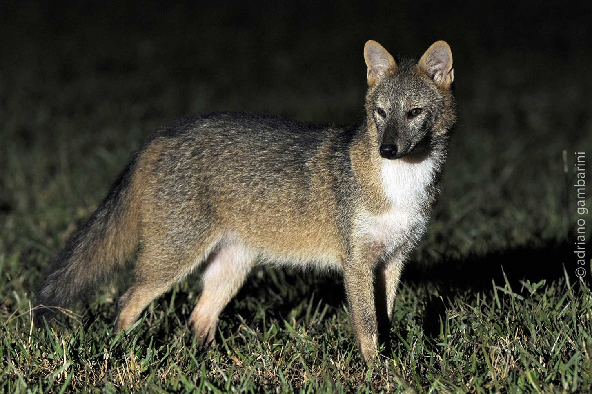
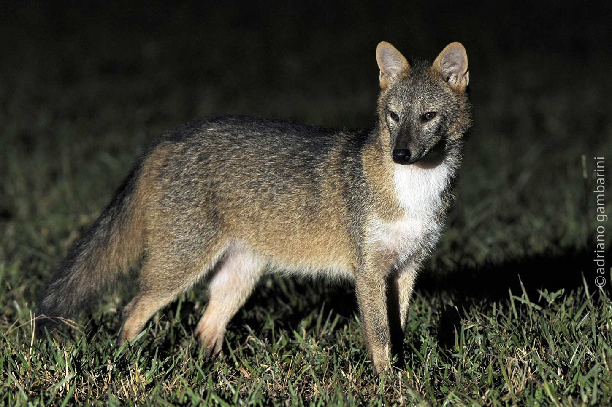

Nomes Populares: Também são conhecidos pelos nomes de aguaraxaim, graxaim-do-mato, lobinho, raposa-da-caatinga, raposa-de-cachorro e lobete.
Classificação Biológica
Dominio: Eukaryota
Reino: Animalia
Filo: Chordata
Classe Mammalia
Ordem: Carnivora
Família: Carnidae
Espécie: C. thous
Nutrição Geral e Hábitos Alimentares
Tipo de Nutrição: Heterotrófico
Alimentam-se de frutos, insetos, crustáceos, pequenos mamíferos, aves, répteis, anfíbios e ovos de diversas espécies; podem atuar como dispersores de sementes, tanto de frutas nativas como cultivadas, e alimentar-se de carcaças de animais domésticos, e de espécie silvestres, como o tambuá bandeira e o gato mourisco.
Morfologia
O cachorro-do-mato (Cerdocyon thous) é uma espécie de canídeo nativa da América do Sul. Ele possui uma pelagem variável, predominantemente marrom-acinzentada, com áreas vermelhas no rosto e nas pernas. Suas orelhas e cauda têm pontas pretas. As pernas são curtas e fortes, e a cauda é longa e espessa. Os adultos podem pesar de 4,5 a 7,7 quilos, com um comprimento médio de cabeça e corpo de 64,3 centímetros e cauda de 28,5 centímetros. Esses animais são noturnos e se abrigam em ocos de árvores e tocas durante o dia.
Comportamento
O cachorro-do-mato é um canídeo carnívoro com hábitos predominantemente noturnos. Aqui estão algumas características do seu comportamento: Hábitos Noturnos e Crepusculares: O cachorro-do-mato é mais ativo durante a noite e ao amanhecer ou anoitecer. Vaga em Pares: Costuma vagar pelos territórios em pares. Quando separados, mantêm contato por latidos de alta frequência a longas distâncias. Caçador Solitário: Geralmente caça sozinho, mas quando jovem, pode agir em grupos de até quatro indivíduos. Alimentação: Sua dieta inclui pequenos mamíferos, aves, répteis e também frutos. Além disso, auxilia na dispersão de sementes.
Ocorrência
O cachorro-do-mato (Cerdocyon thous) é uma espécie nativa da América do Sul, estendendo-se do norte do Panamá até o noroeste da Argentina. Sua população está concentrada em duas faixas principais: nas regiões montanhosas e costeiras que se estendem desde a Venezuela e Panamá até o delta do Paraná na Argentina. Além disso, você pode encontrá-lo na Caatinga, Pantanal, Cerrado, Campos Sulinos e na Mata Atlântica.
Mapa de Ocorrência
Reprodução
O cachorro-do-mato é monogâmico, tendo apenas um parceiro durante toda a vida. Os picos reprodutivos ocorrem em novembro e dezembro. As fêmeas podem gerar de 3 a 6 filhotes por ninhada e concebem até duas vezes ao ano. A gestação dura entre 52 e 59 dias, e os filhotes nascem com cerca de 160 gramas.
 
